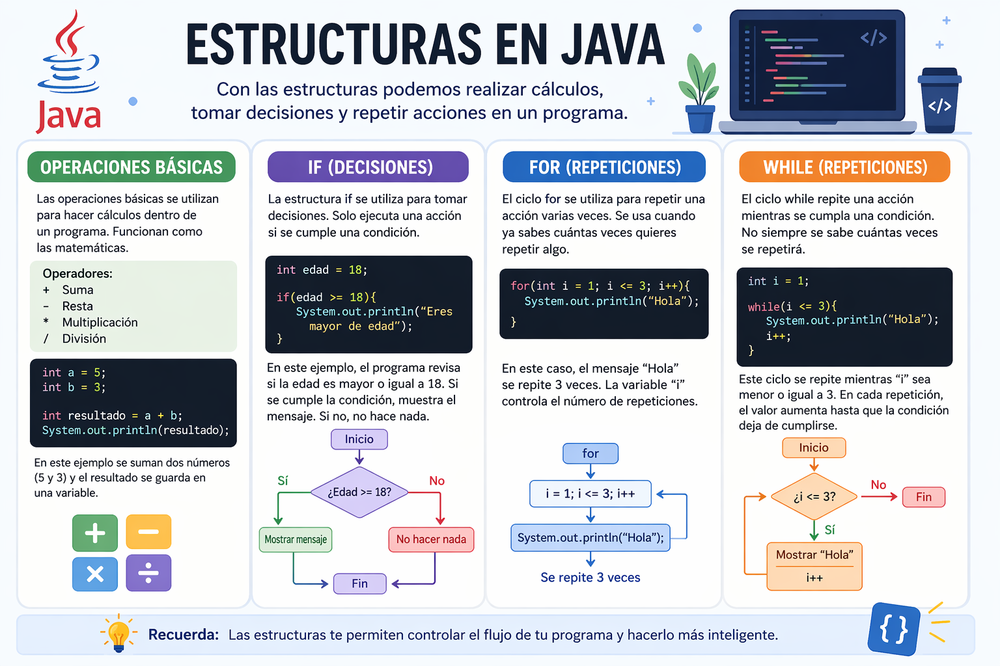

En esta sección aprenderás cómo realizar operaciones, tomar decisiones y repetir acciones en Java.

Las operaciones básicas se utilizan para hacer cálculos dentro de un programa. Funcionan de forma similar a las matemáticas.
int a = 5; int b = 3; int resultado = a + b;
En este ejemplo se suman dos números (5 y 3) y el resultado se guarda en una variable. Estas operaciones se usan para resolver problemas o hacer cálculos.
La estructura if se utiliza para tomar decisiones dentro de un programa. Solo ejecuta una acción si se cumple una condición.
int edad = 18;
if(edad >= 18){
System.out.println("Eres mayor de edad");
}
En este ejemplo, el programa revisa si la edad es mayor o igual a 18. Si se cumple la condición, muestra el mensaje. Si no, no hace nada.
El ciclo for se utiliza para repetir una acción varias veces. Se usa cuando ya sabes cuántas veces quieres repetir algo.
for(int i = 1; i <= 3; i++){
System.out.println("Hola");
}
En este caso, el mensaje "Hola" se repite 3 veces. La variable "i" controla el número de repeticiones.
El ciclo while repite una acción mientras se cumpla una condición. No siempre se sabe cuántas veces se repetirá.
int i = 1;
while(i <= 3){
System.out.println("Hola");
i++;
}
Este ciclo se repite mientras "i" sea menor o igual a 3. En cada repetición, el valor aumenta hasta que la condición deja de cumplirse.
¿Qué hace este código?
System.out.println("Hola");
Muestra el texto Hola en la pantalla.
¿Cuántas veces se repite este código?
for(int i = 1; i <= 3; i++){
System.out.println("Hola");
}
Se repite 3 veces.
¿Cuándo se ejecuta el if?
if(edad >= 18){
System.out.println("Mayor");
}
Se ejecuta cuando la condición es verdadera.